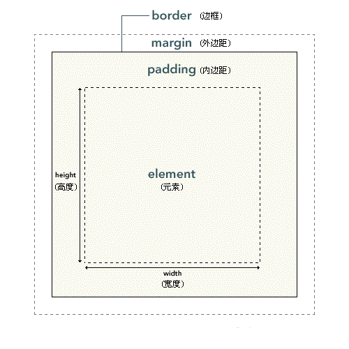
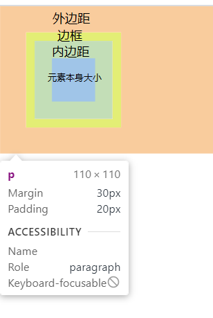
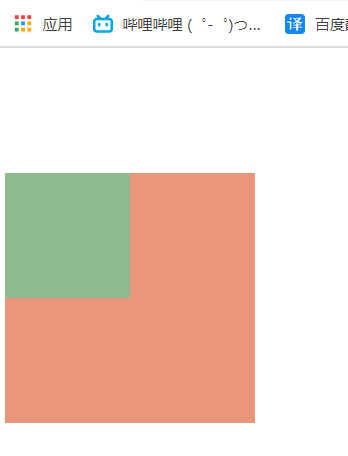
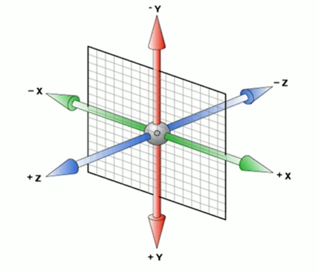

CSS理论
样式的书写位置
行内样式
xxxxxxxxxx11<span style="color: red;">内联样式</span>内嵌样式
用的最多，把需要用的css代码都集中放到style标签里面
xxxxxxxxxx61<style type="text/css">2 span{3 color: red;4 }5</style>6<span>内嵌样式</span>链接样式
如果css代码很多的话，可以单独打包到一个文件里面，然后这样导入，做到html和css的分离。
xxxxxxxxxx11<link rel="stylesheet" href="" type="text/css">导入样式
跟链接样式类似，可以导入外部的css代码，不过这个是写在style里面的。一共有6种写法。
xxxxxxxxxx91<style>2 @import 某某某;3 @import '';4 @import "";5
6 @import url();7 @import url('');8 @import url("");9</style>也就是说css不关心引号的写法，没有也可以。
元素的显示模式
块级元素
独占一行
高度、宽度、内外边距都可以控制
默认宽度是父元素的100%
里面可以放行内或块级元素
<p>、<h1>这种文字类的标签，里面不允许放入块级元素。
常见的有<h1>到<h6>、<div>、<ul>、<ol>、<li>
行内元素
一行可以有多个行内元素
不能直接设置宽高
宽度由其内容撑起
行内元素只能容纳文本或者其他行内元素
特别的
<a>里面不允许再放a标签了。但是a标签里面允许放入块级元素。不过为了安全，最好把a标签先转成块级元素。
常见的有<a>、<span>、<strong>等
行内块元素
一行可以有多个元素
宽度由内容撑起
宽度、高度、内外边距可以直接控制
常见的有<img/>、<input/>、<td>等
显示模式的转化
有时候，一些行内元素也需要转化成块级元素。比如说a标签，我们有时候需要a标签的面积比较大，以便用户点击，但是又设置不了其宽高，这就很不方便。此时我们就可以使用display属性就可以进行转化了。
xxxxxxxxxx61a{2 display: block; /*转化为块级元素*/3 width: 100px;4 height: 100px;5 background-color: blanchedalmond;6}同样的，有时候我们也需要转化成其他的元素。
xxxxxxxxxx51display: block; /*转化为块级元素*/2display: inline; /*转化为行内元素*/3display: inline-block; /*转化为行内块元素*/4
5display: none; /*隐藏该元素*/
CSS样式的特性
层叠性
css中，如果设置相同的样式，那么新设置的会覆盖掉原来的。
xxxxxxxxxx51div{2 background-color: rosybrown;3 background-color: pink;4}5/*最终会留下来pink*/继承性
css中，子标签会继承父标签的部分样式。
xxxxxxxxxx31div {2 color: red;3}xxxxxxxxxx31<div>2 <span>我的颜色是继承来的</span>3</div>
继承的属性主要都是文字和颜色相关的。
font-开头的
text-开头的
line-开头的
color
选择器的权重
如果两个选择器对同一个元素进行样式的设置，那么究竟以谁的为准呢？
xxxxxxxxxx61#box1{2 color: slateblue;3}4div {5 color: red;6}xxxxxxxxxx11<div id="box1">我是div</div>答案是以id选择器为准，这是因为css的选择器实际上有一套隐藏的权重，根据选择器的权重来判断最终的样式。
| 选择器 | 权重 |
|---|---|
| 通配符选择器、继承 | 0000 |
| 元素选择器 | 0001 |
| 类选择器、伪类选择器 | 0010 |
| ID选择器 | 0100 |
| 行内样式 | 1000 |
| !important | 无穷大 |
要注意两点
继承的权重是0
xxxxxxxxxx61#box1{2 color: slateblue;3}4p {5 color: red;6}xxxxxxxxxx31<div id="box1">2 <p>我是div的子元素</p>3</div>最终文字会是红色，因为id选择器给父元素设置的样式权重是0，也就是说只要子元素设置了样式，就会覆盖掉父元素的。
其实这个用的很多，比如说a标签等一些标签就会有默认的样式，其本质就是：
xxxxxxxxxx41a {2 text-decoration: underline;3 color: blue;4}所以对body设置样式body{color:red;}，你会发现a标签根本没有变化。这就是因为body的样式继承到a之后，权重为0.然后被a标签的元素选择器给覆盖掉了。
!important的权重是无穷大
xxxxxxxxxx61div{2 color: slateblue !important;3}4#box1 {5 color: red;6}xxxxxxxxxx31<div id="box1">2 我是div3</div>最终颜色会是蓝色，因为设置了!important之后，样式的权重就会无穷大。
权重的叠加
对于复合选择器，选择器的权重则是各个选择器权重的和。
xxxxxxxxxx71li {2 color: darkblue;3}4
5ul li {6 color: darkred;7}xxxxxxxxxx51<ul>2 <li>html</li>3 <li>css</li>4 <li>JavaScript</li>5</ul>在本例中，颜色最终会变成darkred。因为ul是一个元素选择器，权重为1；li权重也是1，两个一加权重就是2了。比单独一个li权重大。所以最终是暗红色。
要注意a:hover这种选择器权重是11。a是1，伪类选择器是10，一加是11。
基本样式速查
文字相关
复合属性
xxxxxxxxxx21font: font-style font-weight font-size/line-height font-family; /*书写顺序*/2font: normal 400 20px/1.5 '微软雅黑';其中 font-size 和 font-family 属性不能省略。
xxxxxxxxxx11font: 20px '微软雅黑';字符间距
xxxxxxxxxx11letter-spacing: 20px;
文字竖向排列
xxxxxxxxxx11writing-mode: tb-rl;xxxxxxxxxx21writing-mode: vertical-rl;2text-orientation: upright;
文字颜色
xxxxxxxxxx31color: black;2color: #bababa;3color: rgb(165, 70, 70);
文字大小
xxxxxxxxxx11font-size: 19px;要注意！
xxxxxxxxxx31body{2 font-size: 19px;3}这种情况对h1等h标签不起作用，标题标签比较特殊，需要单独设置。
xxxxxxxxxx31h1{2 font-size: 19px;3}文字加粗
xxxxxxxxxx41font-weight: 700; /*bold粗细*/2font-weight: 400; /*正常粗细*/3font-weight: bold;4font-weight: normal;斜体
xxxxxxxxxx21font-style: italic; /*字体倾斜*/2font-style: normal; /*恢复正常*/
文本对齐
xxxxxxxxxx31text-align: center; /*文字居中*/2text-align: left; /*文字左对齐*/3text-align: right; /*文字右对齐*/
文本装饰
xxxxxxxxxx41text-decoration: none; /*啥都没有*/2text-decoration: underline; /*下划线*/3text-decoration: overline; /*上划线*/4text-decoration: line-through; /*删除线*/
行间距
xxxxxxxxxx31line-height: normal; /*默认值，自动设置合理的行间距*/2line-height: 20px;3line-height: 2; /*代表行间距是文字大小的2倍（2*font-size）*/| 值 | 描述 |
|---|---|
| normal | 默认。设置合理的行间距。 |
| 某数字 | 设置数字，此数字会与当前的字体尺寸相乘来设置行间距。 |
| 某某px | 设置固定的行间距。 |
| % | 基于当前字体尺寸的百分比行间距。 |
| inherit | 规定应该从父元素继承 line-height 属性的值。 |
行间距包括了三部分
上边距
文字
下边距
而文字的大小是固定的，font-size设置了多少就是多少，所以改变行间距本质上就是改变上下边距的大小。例如我字体大小是20px，行间距是24px，那么上下边距就是2px。要注意：上下边距一定是相等的。
文字阴影
xxxxxxxxxx11text-shadow: 10px 5px 2px #FF0000;| 参数 | 描述 |
|---|---|
| 第一个参数 | 必需。阴影离文字的水平距离。允许负值。 |
| 第二个参数 | 必需。阴影离文字的垂直距离。允许负值。 |
| 第三个参数 | 可选。代表这个阴影有多模糊。 |
| 第四个参数 | 可选。阴影的颜色。 |
首行缩进
xxxxxxxxxx21text-indent: 2em; /*1em就是当前元素一个文字的大小*/2text-indent: 10px;
字体族
这个可以指定字体，默认从左开始，如果电脑没有装这个字体，就会使用右边的字体。如果都没有，就会使用浏览器默认字体。
xxxxxxxxxx11font-family: '微软雅黑',"Times New Roman",Georgia,Serif;如果字体中间有空格，需要加引号，如果没有可以不加。
除了加载本地字体，也可以加载外部字体
xxxxxxxxxx51
2@font-face {3 font-family:"" ;4 src: url('');5}
禁止文本换行
xxxxxxxxxx41p2{3 white-space: nowrap;4}文本省略
需要同时设置三个属性
xxxxxxxxxx31white-space: nowrap;2overflow:hidden;3text-overflow: ellipsis;
列表相关
xxxxxxxxxx11list-style:none;
背景相关
复合属性
xxxxxxxxxx21background: 颜色 图片url 是否重复 位置是否固定 位置坐标;2background: black url() no-repeat fixed center center;
背景颜色
背景颜色默认都是透明的
xxxxxxxxxx51background-color: transparent; /*默认透明*/2background-color: gray;3background-color: #bfc;4background-color: rgb(red, green, blue);5background-color: rgba(red, green, blue, alpha); /*alpha在0到1之间*/
背景图片
xxxxxxxxxx21background-image: none; /*默认没有背景图片*/2background-image: url("");
背景图片重复
xxxxxxxxxx41background-repeat: repeat; /*默认，xy轴都重复*/2background-repeat: no-repeat; /*背景图像将仅显示一次*/3background-repeat: repeat-x; /*只在x轴重复*/4background-repeat: repeat-y; /*只在y轴重复*/背景尺寸
xxxxxxxxxx31background-size: 50px;2background-size: contain; /*等比缩放，占满整个容器，但是会留白*/3 background-size: cover;/*同样是等比缩放，但是不会留白，因此有一部分图片会看不见*/
背景开始的位置
设置background-attachment:fixed;才能兼容 Firefox 和 Opera 浏览器。
xxxxxxxxxx11background-attachment: fixed;/*兼容Firefox 和 Opera 浏览器*/
background-position有两个值，第一个是x轴的坐标，第二个是y轴的。
xxxxxxxxxx21background-position: 20px 50px; /*离左侧20px，离顶部50px*/2background-position: right center; /*水平右对齐，垂直居中*/其中right center和center right顺序可以互换。因为right只能表示水平方向，所以center只能是垂直方向。两边互换浏览器也能分析出来。也就是说方位名词的顺序可以互换。
如果只写了一个参数，那么另一个默认是center
xxxxxxxxxx11background-position: right;/*第二个参数默认是center*/
常用的位置：
xxxxxxxxxx111background-position: left top;/*左上角*/2background-position: center top;/*上*/3background-position: right top;/*右上角*/4
5background-position: left center;/*左*/6background-position: center center;/*中间*/7background-position: right center;/*右*/8
9background-position: left bottom;/*左下角*/10background-position: center bottom;/*下*/11background-position: right bottom;/*右下角*/
背景附着
xxxxxxxxxx21background-attachment: fixed; /*背景位置固定*/2background-attachment: scroll; /*背景滚动*/注意！在使用radial-gradient等情况的时候，建议加上这个，可以方式背景重复
背景渐变
径向渐变
xxxxxxxxxx11background-image: radial-gradient(circle, red 5%, green 15%, blue 60%);线性渐变
xxxxxxxxxx11background-image: linear-gradient(#e66465, #9198e5);
尺寸相关
宽度
xxxxxxxxxx11width:100px;
溢出
如果你的文本过大，超过了设计的尺寸，就会发生溢出
xxxxxxxxxx71overflow: visible; /*默认，即使超出也可见*/2overflow: scroll;/*显示滚动条*/3overflow: hidden;/*不显示*/4
5/*也可以单独设置xy方向的溢出*/6overflow-y: visible;7overflow-x: visible;
边框相关
鼠标相关
一般搭配伪类使用
鼠标悬停样式
| 值 | 描述 |
|---|---|
| url | 想传送的url |
| default | 默认光标（通常是一个箭头） |
| auto | 默认。浏览器设置的光标。 |
| crosshair | 光标呈现为十字线。 |
| pointer | 光标呈现为指示链接的指针（一只手） |
| move | 此光标指示某对象可被移动。 |
| e-resize | 此光标指示矩形框的边缘可被向右（东）移动。 |
| ne-resize | 此光标指示矩形框的边缘可被向上及向右移动（北/东）。 |
| nw-resize | 此光标指示矩形框的边缘可被向上及向左移动（北/西）。 |
| n-resize | 此光标指示矩形框的边缘可被向上（北）移动。 |
| se-resize | 此光标指示矩形框的边缘可被向下及向右移动（南/东）。 |
| sw-resize | 此光标指示矩形框的边缘可被向下及向左移动（南/西）。 |
| s-resize | 此光标指示矩形框的边缘可被向下移动（南）。 |
| w-resize | 此光标指示矩形框的边缘可被向左移动（西）。 |
| text | 此光标指示文本。 |
| wait | 此光标指示程序正忙（通常是一只表或沙漏）。 |
| help | 此光标指示可用的帮助（通常是一个问号或一个气球）。 |
列表
xxxxxxxxxx11list-style-type:none
其他常用样式
透明
请设置在[0-1]之间
xxxxxxxxxx11opacity: 值;圆角
xxxxxxxxxx41/*默认全部角*/2border-radius: 25px;3/*分别设置*/4border-radius: 15px 50px 30px 5px:禁止用户选中
xxxxxxxxxx11 user-select:none;
盒子阴影
xxxxxxxxxx21box-shadow: h-shadow v-shadow blur spread color inset;2box-shadow: 15px 15px 20px 10px black;| 值 | 说明 |
|---|---|
| h-shadow | 必需的。水平阴影的位置。允许负值 |
| v-shadow | 必需的。垂直阴影的位置。允许负值 |
| blur | 可选。模糊距离，就是有多糊。 |
| spread | 可选。阴影的大小 |
| color | 可选。阴影的颜色。在CSS颜色值寻找颜色值的完整列表 |
| inset | 可选。内阴影，元素凹进去的感觉。 |
盒模型
概述
盒模型相关的样式包括:
内外边距
边框
CSS认为,每一个文档的元素都是一个盒子,这个盒子包括自身的大小,边框大小,内边距和外边距.如下图:

如果在浏览器(以chrome为例)里面用开发者工具查看,可以发现,实际上内外边距,外边距还有边框都是占地方的,
xxxxxxxxxx71p{2 border: #ADFF2F 10px solid;3 padding: 20px;4 margin: 30px;5 width: 50px;6 height: 50px;7}

这些样式的区别就在于,内边距是算在元素本身的大小里面的,啥意思呢,就比如你元素宽20px,内边距你两边各加10px,那么你这个元素整体就宽40px.边框也是一样的,但是外边距不会算在元素里面。
也就是说内边距和边框会影响盒子大小。
边框
概述
一个元素有上下左右四个边框(废话),css允许分别定义各个方向上边框的样式.比如说
xxxxxxxxxx11border-color:red green blue pink;分别为上,右,下,左指定不同颜色.也就是从上开始,顺时针排列.
xxxxxxxxxx11border-color:red green blue;如果只写三个,那么第一个是上边框,第二个是左右边框,第三个是下边框.
xxxxxxxxxx11border-color:red green;只写两个的话就是上下边框,左右边框
xxxxxxxxxx11border-color:red;
一个的话肯定就是全部红喽;
这样分别指定样式的操作,在边框里面是通用的,也可以来指定宽度,表现等.如果不想这样隐式指定,也可以显示指定.
xxxxxxxxxx41border-top-width: 15px;2border-right-color: blue;3border-left-style: solid;4border-bottom-color: red;像这样子,直接指定也是可以的.
注意:!!!!!!!!!!!!!!只有把width,style和color都指定了之后才能正常显示边框,否则不会显示!!!!!!!!!!!!!!!!!!.
边框样式
xxxxxxxxxx11border-style: solid;| 值 | 描述 |
|---|---|
| none | 定义无边框。 |
| hidden | 与 "none" 相同。不过应用于表时除外，对于表，hidden 用于解决边框冲突。 |
| dotted | 定义点状边框。在大多数浏览器中呈现为实线。 |
| dashed | 定义虚线。在大多数浏览器中呈现为实线。 |
| solid | 定义实线。 |
| double | 定义双线。双线的宽度等于 border-width 的值。 |
| groove | 定义 3D 凹槽边框。其效果取决于 border-color 的值。 |
| ridge | 定义 3D 垄状边框。其效果取决于 border-color 的值。 |
| inset | 定义 3D inset 边框。其效果取决于 border-color 的值。 |
| outset | 定义 3D outset 边框。其效果取决于 border-color 的值。 |
| inherit | 规定应该从父元素继承边框样式。 |
边框宽度
xxxxxxxxxx11border-width: 20px;| 值 | 描述 |
|---|---|
| thin | 定义细的边框。 |
| medium | 默认。定义中等的边框。 |
| thick | 定义粗的边框。 |
| 某某px | 自定义宽度 |
| inherit | 规定应该从父元素继承边框宽度。 |
边框颜色
xxxxxxxxxx11border-color:red green blue pink;跟字体颜色一样,详情参考颜色表.
边框合并
xxxxxxxxxx11border-collapse: collapse;边框圆角化
xxxxxxxxxx11border-radius: 10px;这个玩意的原理，就是用一个半径为10px的圆和四条边做切线，半径越大，角就越圆。
根据这个原理，我们可以制造出圆形和圆角矩形
xxxxxxxxxx21border-radius: 50%; /*圆形，值为宽度的一半*/2border-radius: 高度的一半; /*圆角矩形*/
圆角属性也可以分别设置四个角，从左上角开始，顺时针转一圈。也可以单独设置。
xxxxxxxxxx41border-top-left-radius: 10px; /*左上角*/ 2border-top-right-radius: 10px; /*右上角*/3border-bottom-left-radius: 10px; /*左下角*/4border-bottom-right-radius: 10px; /*右下角*/
简写
因为边框想要生效必须指定三个属性,写起来确实很麻烦,为了增加程序员的寿命,HTML支持边框的简写
xxxxxxxxxx11border:5px solid red;像这样,可以一次性设置三个属性.
内边距
xxxxxxxxxx51padding: 20px;2padding-left: 20px;3padding-right: 20px;4padding-top: 20px;5padding-bottom: 20px;
若设置width，padding会增加盒模型的大小。但是若不设置width，则不会影响其大小。
xxxxxxxxxx241/*在这种情况下，子元素没有设置width，虽然设置了padding，但是不会超过父元素的width*/2#box1 {3 width: 200px;4 height: 200px;5 background-color: darksalmon;6}7
8#box2 {9 padding: 20px;10 background-color: darkseagreen;11}12
13/*子元素一旦设置了width，那么padding就会把盒子撑大从而超过父元素的width*/14#box1 {15 width: 200px;16 height: 200px;17 background-color: darksalmon;18}19
20#box2 {21 width:100%;22 padding: 20px;23 background-color: darkseagreen;24}xxxxxxxxxx31<div id="box1">2 <div id="box2">内盒子</div>3</div>
第一种虽然设置了padding，但是不会影响盒子大小
第二种加了width，则会影响盒子大小。
外边距
概述
xxxxxxxxxx11margin: 10px;
对于一个块级盒子，可以设置外边距使其水平居中
xxxxxxxxxx11margin: 0 auto;
注意！对于行内元素，请只设置左右的外边距。如果非要设置，请转换成块级元素。
外边距塌陷
当子元素和父元素同时设置了 margin-top属性时，子元素并不会真的和父元素有外边距。而是和父元素的外边距重叠。值为其中较大的那项。
xxxxxxxxxx131#box1 {2 width: 200px;3 height: 200px;4 background-color: darksalmon;5 margin-top: 100px;6}7
8#box2 {9 width: 100px;10 height: 100px;11 background-color: darkseagreen;12 margin-top: 50px;13}xxxxxxxxxx31<div id="box1">2 <div id="box2"></div>3</div>

可以看到，子元素并没有向下移动，而是和父元素整体向下了。而且向下的值为max(100px,50px)。
外边距坍塌的解决
为父元素设置上边框
xxxxxxxxxx71#box1 {2 width: 200px;3 height: 200px;4 background-color: darksalmon;5 margin-top: 100px;6 border-top: 1px solid transparent;7}为父元素设置上内边距
xxxxxxxxxx71#box1 {2 width: 200px;3 height: 200px;4 background-color: darksalmon;5 margin-top: 100px;6 padding-top: 1px;7}为父元素设置
overflow: hidden;
xxxxxxxxxx71#box1 {2 width: 200px;3 height: 200px;4 background-color: darksalmon;5 margin-top: 100px;6 overflow: hidden;7}清除网页默认的内外边距
网页自带内外边距，我们在写代码时需要先手动清除。
xxxxxxxxxx41* {2 margin: 0;3 padding: 0;4}选择器
基本选择器
通配符选择器
就是全选的意思,选中html文档中所有的元素.
xxxxxxxxxx41*{2 margin:0;3 padding:0;4}元素选择器
可以直接选择某一个标签,然后直接对HTML中所有这种标签进行批量编辑.
xxxxxxxxxx31p{2 color:red;3}这个就是让所有p标签内部文字颜色变为红色.
类选择器
可以批量选择自定义的类,用于某一类特定的标签。
而且在html中，一个标签可以指定多个类，但是要用空格隔开。
html:
xxxxxxxxxx61<ul>2 <li class="blue">java</li>3 <li class="blue">c#</li>4 <li class="blue">sql</li>5 <li class="blue big">css</li>6</ul>css:
xxxxxxxxxx81<style type="text/css">2 .blue{3 color:blue4 }5 .big{6 font-size:30px;7 }8</style>一般类选择器选择的都是某一类标签,在需要添加这个类的标签前面加上class,后面可以指定想要的类,类名可以随便起.在css里面用点类名的办法,选择所有该类.
一般来说,类选择器都是批量选择很多该类的标签,比如说ul的列表,li有很多很多条,为每一个li单独设计样式岂不是累死了,所以可以给他们起一个类名item,批量添加这些li的样式.
ID选择器
只能选择某一个特定的标签,一般只有一些特殊含义的标签才用起ID.还是刚才的例子.
html:
xxxxxxxxxx61<ul id="language-list">2 <li class="item">java</li>3 <li class="item">c#</li>4 <li class="item">sql</li>5 <li class="item">css</li>6</ul>css:
xxxxxxxxxx51<style type="text/css">2 #language-list{3 color:blue4 }5</style>ID选择器中,css用#加ID名就可以选中标签,一般一个网页里面这个语言列表可能就这么一个,所以比较特殊,可以用ID选择器来选中,直接操作这个标签.
复合选择器
包含选择器
选择所有div里面所有的span标签，子元素里面的span标签也会被选上，
xxxxxxxxxx31div span{2 color:red;3}xxxxxxxxxx61<div>2 <span>外层span</span>3 <ul>4 <li> <span>里面的span</span> </li>5 </ul>6</div>
子选择器
选择div下的子元素，只能选择最近一层子元素，也就是亲儿子。里面的span不会被选上。
xxxxxxxxxx31div > span{2 color:red;3}xxxxxxxxxx61<div>2 <span>外层span</span>3 <ul>4 <li> <span>里面的span</span> </li>5 </ul>6</div>
相邻选择器
说是选相邻，其实也不是真正的相邻元素，它只能按照+前后的顺序排列的元素，也就是说#s1之后必须是#s2，顺序颠倒也不行。
xxxxxxxxxx141<head>2 <style>3 #s1 + #s2{4 color:red;5 }6 </style>7</head>8<body>9 <div>10 <span id="s1">s1</span>11 <span id="s2">s2</span>12 13 </div>14</body>兄弟选择器
相邻选择器选择的元素必须是相邻的同级元素，而兄弟选择器的要求就低一点了，只要是在#s1后定义的#s2就能被选中，中间可以不用相邻，隔着其他元素也可以。
xxxxxxxxxx141<head>2 <style>3 #s1 ~ #s2{4 color:red;5 }6 </style>7</head>8<body>9 <div>10 <span id="s1">s1</span>11 <span></span>12 <span id="s2">s2</span>13 </div>14</body>并集选择器
如果你想同时给多个不同元素设置样式，可以用并集选择器
xxxxxxxxxx11body, h2, p, table, th, td, pre, strong, em {color:gray;}像这样，彼此之间用逗号隔开，表示同时选中。
伪类选择器
名字虽然很酷，其实没那么复杂，这个玩意可以来操作一些特殊的类，比如超链接的样式，输入框聚焦后的样式等等。写法就是在需要添加的元素后面冒号，然后加入想加入的伪类即可。
动态伪类
锚点伪类
xxxxxxxxxx21a:link {color: #FF0000} /* 未被访问的超链接 */2a:visited {color: #00FF00} /* 已访问的链接 */行为伪类
xxxxxxxxxx31a:hover {color: #FF00FF} /* 鼠标移动到超链接上的时候 */2a:active {color: #0000FF} /* 鼠标点下去的一瞬间 */3input:focus{color: #bfbfbf;} /*获取到焦点后，一般用于文本框*/
顺序问题
注意！！！！！
这几个伪类在书写时顺序不能乱动，必须按照下面的顺序来，否则不能正常显示。
xxxxxxxxxx121a:link{2
3}4a:visited{5
6}7a:hover{8
9}10a:active{11
12}
结构伪类
first-child
顾名思义,就是选择第一个子元素,但是这里面有很多坑,必须注意
先看html:
xxxxxxxxxx21<p><span>我是span</span>我是p</p>2<p><span>我是span</span>我是p</p>
选择所有p标签中,第一个p标签
xxxxxxxxxx31p:first-child{2 color: red;3} 
选择所有p标签内部第一个子元素
xxxxxxxxxx31p>:first-child {2 color: red;3}
before和after
可以用这两个伪类,在某个元素前面或后面插入文本.用content来控制文本内容.
xxxxxxxxxx81p:before2{3 content:"我是before加的";4}5p:after6{7 content:"我是after加的";8}状态伪类
这个是用来选择表单元素的。
enabled
选中所有可用的表单元素
xxxxxxxxxx131<head>2 <style>3 input:enabled{4 color: #bfbfbf;5 } 6 </style>7</head>8<body>9 <form action="">10 <input type="text">11 <input type="button" value="按钮">12 </form>13</body>此时将会把文本框和按钮都选中，因为默认情况下表单元素是enabled
disabled
选中所有不可用的表单元素
xxxxxxxxxx131<head>2 <style>3 input:disabled{4 color: red;5 } 6 </style>7</head>8<body>9 <form action="">10 <input type="text">11 <input type="button" value="按钮" disabled>12 </form>13</body>
属性选择器
如果你想选择带某个属性的标签,可以用属性选择器.但是里面也有很多坑,需要注意.
指定某种属性
xxxxxxxxxx11a[href] {color:red;}这个例子就是选择所有有href属性的a标签.也可以同时指定多个属性:
指定同时具有多种属性
xxxxxxxxxx11a[href][title] {color:red;}这个就是选择同是有href和title属性的a标签
精确指定某个具体属性
xxxxxxxxxx11p[class="A B"] {color:red;}选择某个有具体属性的标签,注意这个要求严格等于,也就是说你的class也必须是"A B",多一个空格都不行.这时候我们就可以使用下面的写法了.
含有某种属性
xxxxxxxxxx11p[class~="A"] {color: red;}用这个~可以表示含有A的class,不用严格匹配.
属性选择器也支持三种正则语法:
包含某字符串的属性
xxxxxxxxxx11a[href*="dashepi.com"] {color: red;}选择a标签的超链接中包含"dashepi.com"这个字符串的所有a标签
以某字符串开头的属性
xxxxxxxxxx11a[href^="www."] {color: red;}选择href以"www."开头的a标签
以某字符串结尾的属性
xxxxxxxxxx11a[href$=".cn"] {color: red;}选择href以".cn"结尾的a标签
以xxx-开头或者值为xxx的标签
xxxxxxxxxx61/* 写 显示图片阴影 */23img[alt|="shadow"] {4box-shadow: var(--shadow);5}6
浮动带来的问题
高度塌陷
清除浮动
我们布局时，父元素的高度有时候并不是确定的，比如说纵向的导航栏，数量有可能改变。所以说我们不能把高度写死。但是不写高度又会发生高度塌陷。怎么办呢？
这时候就需要我们来想办法解决高度塌陷了。这就是我们大名鼎鼎的清除浮动。
清除浮动有三种方法：
额外标签法
在子元素的最后面额外加一个标签。而且必须是块级元素。
xxxxxxxxxx71<div id="box1">2 <div id="box2">我是box1的子元素</div>3 <div style="clear: both;"></div>4</div>5<div id="box3">6 我是box1的兄弟元素，我在box1下面。因为块级元素独占一行啦。7</div>给父元素添加overflow
属性设置为hidden、scroll、auto都可以。
增加
:after伪元素，本质上就是给子元素后面再增加一个空元素。然后清除浮动。
xxxxxxxxxx81.clearfix::after {2 content: "";3 display: block;4 height: 0;5 clear: both;6 visibility: hidden;7 *zoom: 1;/*兼容IE6和7*/8}
清除浮动最终解决代码
只要给父元素加上这个类就可以了。
不用管它什么意思
xxxxxxxxxx131.clearfix::before,2.clearfix::after {3 content: "";4 display: table;5 height: 0;6 clear: both;7 visibility: hidden;8}9
10.clearfix {11 /*兼容IE6和7*/12 *zoom: 1;13}
BFC
概述
BFC(Block formatting context)直译为"块级格式化上下文"。如果开启了BFC，元素就会被单独划分一个BFC的渲染区域，不会影响外界。BFC可以理解为元素的一个隐藏属性。
如果在布局的时候出现了不符合预期的时候，就可以开启BFC。
开启BFC
根元素
<html>设置浮动，并且float不是none
设置绝对定位，position为absolute或者fixed
设置overflow，除了visible和clip都可以
contain值为layout、content、paint的元素
设置display为flow-root等
高度塌陷
刚才我们说过，一般，浮动的元素都要有一个文档流的父元素，以便布局。
xxxxxxxxxx191#box1 {2 height: 200px;3 /*如果不加，那么就会高度塌陷 */4 background: skyblue;5
6}7
8#box2 {9 float: left;10 width: 100px;11 height: 100px;12 background: lightcoral;13}14
15#box3 {16 width: 300px;17 height: 300px;18 background: lightblue;19}xxxxxxxxxx61<div id="box1">2 <div id="box2">我是box1的子元素</div>3</div>4<div id="box3">5 我是box1的兄弟元素，我在box1下面。因为块级元素独占一行啦。6</div>
你会发现，我这个父元素加了一个height之后，才能显示背景颜色。如果把height去掉，背景颜色就会消失。也就是说如果子元素浮动，那么父元素的高度就会塌陷为0。也就是说父元素无法被浮动的子元素撑开。而文档流中，父元素会被子元素撑开的。
xxxxxxxxxx161#box1 {2 /* height: 200px; 如果不加，那么就会高度塌陷 */3 background: skyblue;4
5}6#box2{7 float: left;8 width: 100px;9 height: 100px;10 background: lightcoral;11}12#box3{13 width: 300px;14 height: 300px;15 background: lightblue;16}xxxxxxxxxx61<div id="box1" >2 <div id="box2">我是box1的子元素</div>3</div>4<div id="box3">5 我是box1的兄弟元素，啊嘞嘞？我怎末跑上面来了？我兄弟人没了？6</div>解决：在父元素添加overflow: hidden
外边距塌陷
当两个div都设置了外边距的时候，
两个块元素是父子关系
两个块元素上下挨着
xxxxxxxxxx31<div style="width: 100px; height: 100px; background-color: skyblue; margin-bottom: 100px;">外边距怎末只有100px！！</div>2
3<div style="width: 200px; height: 200px; background-color: blueviolet; margin-top: 100px;">纳尼！</div>
浮动元素覆盖
xxxxxxxxxx21<div style="width: 100px; height: 100px;float: left; background-color: blue; "></div>2<div style="height: 200px;width: 200px;background-color: red;"></div>
如果开启了BFC，元素之间就不会相互干扰了
xxxxxxxxxx21<div id="test1" style="width: 100px; height: 100px;float: left; background-color: blue; "></div>2<div id="test2" style="height: 200px;width: 200px;background-color: red; overflow: hidden;"></div>
传统布局
传统布局使用dispaly、float、position这三个属性来布局。
position
static
默认的布局，从上到下，从左到右
relative
相对定位，相对于原本的位置偏移，不脱离文档流
absolute
绝对定位，相对于包含自己的容器定位，脱离文档流
fixed
固定定位，相对于浏览器可视窗口定位
sticky
相当于relative+fixed，在移动到某个地方之后开启固定定位
xxxxxxxxxx261<div style="height: 200px; overflow:scroll;">2<p style="background-color:lightgrey; position:sticky; top: 0px;">This is header A</p>3<p>This is content A</p>4<p>This is content A</p>5<p>This is content A</p>6<p>This is content A</p>78<p style="background-color:lightgrey; position:sticky; top: 0px;">This is header B</p>9<p>This is content B</p>10<p>This is content B</p>11<p>This is content B</p>12<p>This is content B</p>1314<p style="background-color:lightgrey; position:sticky; top: 0px;">This is header C</p>15<p>This is content C</p>16<p>This is content C</p>17<p>This is content C</p>18<p>This is content C</p>1920<p style="background-color:lightgrey; position:sticky; top: 0px;">This is header D</p>21<p>This is content D</p>22<p>This is content D</p>23<p>This is content D</p>24<p>This is content D</p>2526</div>
float
xxxxxxxxxx31float: none;2float: left;3float: right;一旦加了浮动的属性，就会出现一些特殊的特性
浮动元素会脱离文档流，不再保留原先的位置。
浮动元素会具有行内块元素的特性。也就是说，如果行内元素浮动，那么就不需要转化成行内块元素。
浮动的元素，会自动往上面飘。比如说设置了left，就会向左上角飘。而且浮动的元素顶端都是对齐的。但是要注意，浮动的元素还是受父元素的约束。也就是说向左飘，也无法飘出父盒子的范围。
所谓的浮动，正如字面含义一样，确确实实是漂浮起来了。也就是说，没有浮动的元素，会自动往上跑。浮动的元素会把它给盖住。
xxxxxxxxxx21 <div style="width: 100px; height: 100px; background-color: skyblue; float: left;">我浮动起来了</div>2 <div style="width: 200px; height: 200px; background-color: blueviolet;">我被挡住了</div>
Flex布局
传统的网页布局是靠 display 属性 + position属性 + float属性完成的，不仅难用，而且bug频出。后来W3C忽悠引出了flex布局，用于替代传统布局。
flex是Flexible Box的缩写，意思是弹性布局。采用了flex布局的元素被称为flex容器（flex container），它的子元素会自动成为flex项目（flex item）
开启flex的方式为：
xxxxxxxxxx11display:flex;以下是几个注意点：
父元素设置了flex属性之后，子元素的行内元素就可以设置大小了。
父元素设置了flex属性之后，子元素的
float、clear和vertical-align属性将失效。子元素不会自动换行，flex会自动调整子元素大小，保证在一行内能装下。
父元素的属性
flex-direction：主轴方向
flex-wrap：控制换行
justify-content：主轴上子元素的排列方式
align-content：控制侧轴上子元素的对齐方式（多行）
align-items：控制侧轴上子元素的对齐方式（单行）
felx-flow：符合属性，相当于设置了
flex-direction和flex-wrap
flex-direction
主轴方向，默认主轴方向水平向右。
| 值 | 作用 |
|---|---|
| row（默认值） | 水平方向，方向从左到右 |
| row-reverse | 水平方向，方向从右到左 |
| column | 垂直方向，方向从上向下 |
| column-reverse | 垂直方向，方向从下向上 |
justify-content
主轴上元素的排列方式，假设主轴方向为默认值。
| 值 | 作用 |
|---|---|
| flex-start（默认值） | 从主轴开始的位置排列元素，也就是靠左对齐 |
| flex-end | 从主轴最后的位置排列元素，也就是靠右对齐 |
| center | 元素居中排列 |
| space-around | 元素在主轴上均匀分布 |
| space-between | 先贴紧两边，再平均排列剩余的元素 |
flex-wrap
控制元素是否换行。flex布局中，子元素不会自动换行，而是会自动调整width，强行加到一行里面。
| 值 | 作用 |
|---|---|
| nowrap（默认值） | 不换行 |
| wrap | 换行 |
align-items
控制侧轴上子元素的对齐方式（单行），侧轴就是不是主轴的轴，主轴是x，那么侧轴就是y。主轴是y，那么侧轴就是x。
它的属性和主轴排列是一样的，假设侧轴是从上到下。
| 值 | 作用 |
|---|---|
| flex-start（默认值） | 从侧轴开始的位置排列元素，也就是靠上对齐 |
| flex-end | 从侧轴最后的位置排列元素，也就是靠下对齐 |
| center | 元素居中排列 |
| stretch | 拉伸，将子元素的高度拉到和父元素一样。前提是不能给子元素设置高度 |
| baseline | 沿着子元素中的第一行文字对齐 |
align-content
如果子元素设置了flex-wrap，也就是变成了多行，此时就可以使用这个属性了。
| 值 | 作用 |
|---|---|
| flex-start（默认值） | 从主轴开始的位置排列元素，也就是靠上对齐 |
| flex-end | 从主轴最后的位置排列元素，也就是靠下对齐 |
| center | 元素居中排列 |
| space-around | 元素在侧轴上均匀分布 |
| space-between | 先贴紧上下，再平均排列剩余的元素 |
| stretch | 设置子元素均分父元素的高度 |
felx-flow
符合属性，相当于设置了flex-direction和flex-wrap。
xxxxxxxxxx11flex-flow:row wrap;
子元素的属性
flex
这个属性代表了子元素在分配剩余空间时的权重。也就是说如果有3个子元素，而且都不设定宽度，那么flex:1;，就说明每元素的权重都是1，最后结果就是三等分。如果某一个元素的flex是2，就说明它的权重为2，最终它占二分之一，其余元素各四分之一。
xxxxxxxxxx11flex:1;而且要注意，这个flex分配的是剩余空间，假如父元素100xp，有几个子元素已经设定了宽度20px，那么flex将会分配80xp的宽度。
align-self
可以单独控制某个元素在侧轴上的排列。和align-items完全一样。
| 值 | 作用 |
|---|---|
| flex-start（默认值） | 从侧轴开始的位置排列元素，也就是靠上对齐 |
| flex-end | 从侧轴最后的位置排列元素，也就是靠下对齐 |
| center | 元素居中排列 |
| stretch | 拉伸，将子元素的高度拉到和父元素一样。前提是不能给子元素设置高度 |
| baseline | 沿着子元素中的第一行文字对齐 |
order
按照数值进行排列，数值越小越靠前。默认值为0。
xxxxxxxxxx11order:0;
Grid布局
和flex一样，采用了grid布局的元素被称为grid容器（grid container），它的子元素会自动成为grid项目（grid item）。要注意的是，项目只是指第一层的子元素，子元素里面的子元素不是项目。
xxxxxxxxxx411<style>2 #outer {3 display: grid;4
5
6 /* 一行有几个元素，每一个元素有多宽 */7 grid-template-columns: 1fr 1fr 1fr;8
9 column-gap: 24px;10 /*列间距*/11 row-gap: 24px;12 /*行间距*/13
14 align-items: center;15 /*垂直方向上对齐元素*/16
17 /* 水平方向对齐 */18 justify-items: center;19
20
21 /* 对整个块进行垂直对齐 */22 align-content: center;23 /* 对整个块进行水平对齐 */24 align-content: center;25 /* grid-template-areas: ""; */26 }27
28 #outer div {29 background-color: azure;30 }31</style>32
33<div id="outer">34 <div>1</div>35 <div>2</div>36 <div>3</div>37 <div>4</div>38 <div>5</div>39 <div>6</div>40</div>41
动画
定义与使用
定义：
xxxxxxxxxx81@keyframes 名字{2 from{3 /* 开始的样式 */4 }5 to{6 /* 结束的样式 */7 }8}使用：
xxxxxxxxxx91#test{2 width: 200px;3 height: 200px;4 background-color: #ADFF2F;5 /* 调用的动画名称 */6 animation-name: 刚刚定义的名字;7 /* 执行动画的时间 */8 animation-duration: 150ms;9}动画序列
from to只能用于一个过程，一次执行完，如果想要分步执行，可以设置时间点，来设置每一个时间点的状态。
xxxxxxxxxx221@keyframes move {2 0% {3 transform: translate(0px, 0px);4 }5
6 25% {7 transform: translate(1000px, 0px);8 }9
10 50% {11 transform: translate(1000px, 500px);12 }13
14 75% {15 transform: translate(0px, 500px);16 }17
18 100% {19 transform: translate(0px, 0px);20 }21}22
常用的属性
| 属性 | 描述 |
|---|---|
| @keyframes | 规定动画。 |
| animation | 所有动画属性的简写属性，除了 animation-play-state 属性。 |
| animation-name | 规定 @keyframes 动画的名称。 |
| animation-duration | 规定动画完成一个周期所花费的秒或毫秒。默认是 0。 |
| animation-timing-function | 规定动画的速度曲线。默认是 "ease"。 |
| animation-delay | 规定动画何时开始。默认是 0。 |
| animation-iteration-count | 规定动画被播放的次数。默认是 1。 |
| animation-direction | 规定动画是否在下一周期逆向地播放。默认是 "normal"。 |
| animation-play-state | 规定动画是否正在运行或暂停。默认是 "running"。 |
| animation-fill-mode | none：不改变默认行为。 forwards ：当动画完成后，保持最后一个属性值（在最后一个关键帧中定义）。 |
缓慢执行样式
xxxxxxxxxx11transition: height 1s;
3D转换
坐标规定
x轴：水平向右 ，x右边是正值，左边是负值
y轴︰垂直向下 ，y下面是正值，上面是负值
z轴︰垂直屏幕 ，往外面是正值，往里面是负值

3D位移
可以直接来创建某一方向的位移
xxxxxxxxxx31transform: translateX(20deg);/*围绕x轴旋转*/2transform: translateY();3transform: translateZ();但是要注意，如果把这三行代码放在一起，后面的会覆盖上面的，所以如果想同时设置多个坐标，需要用其他方法。
xxxxxxxxxx11transform: translate3d(x,y,z);3D透视
就是指的近大远小，如果想要某一个元素拥有透视，需要给其父元素设置透视。
xxxxxxxxxx231<html>3 <head>4 <style>5 #out{6 perspective: 500px;7 }8 #in{9 width: 100px;10 height: 100px;11 background-color: #BC8F8F;12 transform: translate3d(0,0,60px);13 }14 </style>15 </head>16 <body>17 <div id="out">18 <div id="in">19 12320 </div>21 </div>22 </body>23</html>
高级属性
滤镜
xxxxxxxxxx11filter: grayscale(100%);
scroll-snap-type
父元素设置这个
xxxxxxxxxx31ul {2scroll-snap-type: x mandatory;3}
子元素这个
xxxxxxxxxx31li {2scroll-snap-align: center;3}
值与单位
长度
颜色
具名颜色
指可以直接使用颜色名字来设置颜色
例如：
xxxxxxxxxx11h1{color:gray;}
RPG与RGBA
可以用RGB颜色，三个值的取值范围是0~255或者0~100%，但是颜色值不能混用百分数和整数。
例如：
xxxxxxxxxx21h1{color:rgb(191，127，127);}2h2{color:rgb(75%.50%.50%);}而RGBA则是在RGB的基础上增加了透明度，alpha值范围是0~1。alpha为0的时候代表完全透明，1代表完全不透明。
十六进制RGB和RGBA
因为RGB取值范围是0~255，所以可以使用十六进制的00到FF来一一替换。
例如：
xxxxxxxxxx11h1{color:#BBFFCC;}如果十六进制中两个数字一样，那么可以缩写。
xxxxxxxxxx11h1{color:#BFC;}
若加上透明通道，则可以在后面再加两个十六进制数
xxxxxxxxxx11h1{color:#BBFFCCAA;}HSL和HSLA
HSL代表着Hue、Saturation、Lightness。色相取值为0~360，饱和度取值为0~100%，明度取值为0~100%。
例如：
xxxxxxxxxx21h1{color:hsl(180,50%,75%);}2h1{color:hsla(180,50%,75%,0.5);}
CSS函数
var和calc
可以用来定义和计算变量
变量用用两个减号--来开启，使用时直接用var加变量名即可
xxxxxxxxxx31--stand-length:500px;2--height:var(--stand-length);3--width:calc(var( --height)*0.618);
附录1——动画案例
热点图
xxxxxxxxxx661<html>3 <head>4 <style>5 #test {6 width: 200px;7 height: 200px;8 background-color: black;9 opacity: 0.5;10 }11 @keyframes hotspot{12 0%{}13 70%{14 width: 40px;15 height: 40px;16 opacity: 1;17 }18 100%{19 width: 70px;20 height: 70px;21 opacity: 0;22 }23 }24 .hotspot{25 position: absolute;26 top: 100px;27 left: 100px;28 }29 .hotspot #dot{30 width: 8px;31 height: 8px;32 background-color: aqua;33 border-radius: 50%;34 }35 .hotspot [class^="wave"]{36 width: 8px;37 height: 8px;38 box-shadow: 0 0 12px aqua;39 40 position: absolute;41 top: 50%;42 left: 50%;43 transform: translate(-50%,-50%);44 border-radius: 50%;45 46 animation: hotspot 1.2s linear infinite;47 }48 .hotspot .wave2{49 animation-delay: 0.4s;50 }51 .hotspot .wave3{52 animation-delay: 0.8s;53 }54 </style>55 </head>56 <body>57 <div id="test">58 <div class="hotspot">59 <div id="dot"></div>60 <div class="wave1"></div>61 <div class="wave2"></div>62 <div class="wave3"></div>63 </div>64 </div>65 </body>66</html>使用逐帧动画
xxxxxxxxxx141@keyframes play{2 0%{3 background-position: 0,0;4 }5 100%{6 background-position: -图片长度,0;7 }8}9.anima{10 width: 200px;11 height: 100px;12 background: url(图片位置) no-repeat;13 animation: play 2s steps(有几张图) infinite;14}炫彩背景
xxxxxxxxxx651<html lang="ch">3<head>4 <meta charset="UTF-8">5 <title>Document</title>6 <style>7 body{8 background: black;9 }10 a {11 z-index: 1;12 position: absolute;13 left: 50%;14 top: 50%;15 transform: translate(-50%, -50%);16 background: linear-gradient(90deg,#03a9f4,#f441a5,#ffeb3b,#03a9f4);17 background-size: 400%; /*把背景设置的很大，以便待会用动画移动*/18 width: 400px;19 height: 100px;20 line-height: 100px;21 color: black;22 text-transform: uppercase; /*字母大写*/23 border-radius: 50px;24 text-align: center;25 text-decoration: none;26 }27 a::before{28 content: "";29
30 z-index: -1;31
32 /* 把大小做的比a本身大一点 */33 position: absolute;34 top: -5px;35 bottom: -5px;36 left: -5px;37 right: -5px;38 background: linear-gradient(90deg,#03a9f4,#f441a5,#ffeb3b,#03a9f4);39 background-size: 400%; /*把背景设置的很大，以便待会用动画移动*/40 border-radius: 50px;41
42 filter: blur(20px) ;43 }44
45 @keyframes 流光{46 100%{47 background-position: -400% 0;48 }49 }50
51 a:hover{52 animation: 流光 8s infinite;53 }54 a:hover::before{55 animation: 流光 8s infinite;56 }57 </style>58</head>59
60<body>61 <a href="javascript:;">test</a>62
63</body>64
65</html>
附录2——常用样式
normalize.css
xxxxxxxxxx71*{2 margin: 0px;3 padding: 0px;4}5a{6 text-decoration:none;7}
附录3——实用技巧
元素垂直水平居中
如果只设置了left和top，那么实际上是左上角居中了，而不是真正的居中。
xxxxxxxxxx41position: absolute;2left: 50%;3top: 50%;4transform: translate(-50%,-50%);
如果是flex布局则可以
xxxxxxxxxx21align-items:center; 2justify-content:center;
行内元素和行内块元素水平居中
只需要给父元素设置text-algin: center;就可以了。
xxxxxxxxxx71<table>2 <div style="text-align: center;">3 <span>123</span>4 <br/>5 <input type="text" value="hello world">6 </div>7</table>
文字垂直居中
css本身没有这个操作，但是我们可以设置文字行高等于其高度，这样就可以自动垂直居中了。
xxxxxxxxxx61div{2 height: 100px;3 width: 100px;4 line-height: 100px;5 background-color: blanchedalmond;6}
设置长宽相等
(根据宽度设置高度)如果确定width:100%;则设置高度 height: 100vw;
(根据高度设置宽度)如果确定高度height:100%;则设置 width: 100vh;
(根据宽度设置高度)如果确定width:60%;则设置高度 height: 60vw;
(根据高度设置宽度)如果确定高度height:60%;则设置 width: 60vh;
xxxxxxxxxx21width: 20%;2height: 20vw;
设置标签水平垂直居中
xxxxxxxxxx101父元素{2 display: flex;3}4
5子元素{6 /*水平居中*/7 margin: 0 auto;8 /*垂直居中*/9 align-self: center;10}设置背景图片全屏
xxxxxxxxxx151position: fixed;2top: 0;3left: 0;4width: 100%;5height: 100%;6min-width: 1000px;7z-index: -10;8zoom: 1;9background-color: #fff;10background-repeat: no-repeat;11background-size: cover;12background-size: cover;13background-size: cover;14background-position: center 0;15background-image: url("~assets/img/background/001.png");设置div全屏
有的时候需要把div全屏显示，但是发现它只能被里面的子元素撑起来，这是因为原来浏览器默认的body，和html是没有高度的。或者说高度是auto的。所以只需要把这两个都设置为100%就可以了。
xxxxxxxxxx141* {2 margin: 0;3 padding: 0;4}5body,html{6 height: 100%;7}8
9div {10 height: 100%;11 background-color: #ccc;12}13
14
xxxxxxxxxx31
2 min-width: 100vw;3 height: 100vh;用border实现一个三角形
xxxxxxxxxx91#test{2 height: 0px;3 width: 0px;4 border: 40px solid black;5 border-top: none;6 border-left-color: transparent;7 border-right-color: transparent;8
9}
样式案例
滚动贴合
横向滚动
xxxxxxxxxx171#container{2 scroll-snap-type: x mandatory;3 overflow-y: hidden;4 flex-direction: row;5 width: 100vw;6 height: 100vh;7}8
9#container .component {10 width: 100vw;11 height: 100vh;12 justify-content: center;13 align-items: center;14 display: flex;15 flex-shrink: 0;16 scroll-snap-align: start;17}背景增加灰色效果
可以选择多重渲染，让图片也加上颜色滤镜
xxxxxxxxxx31background-blend-mode: multiply;2background-color: rgba(62, 62, 62, 0.465);3background-image: url(../../image/背景/黄昏.jpg);